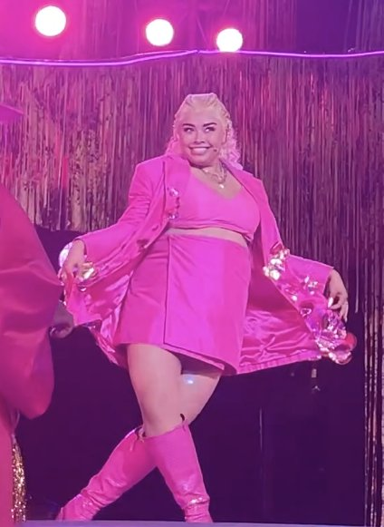
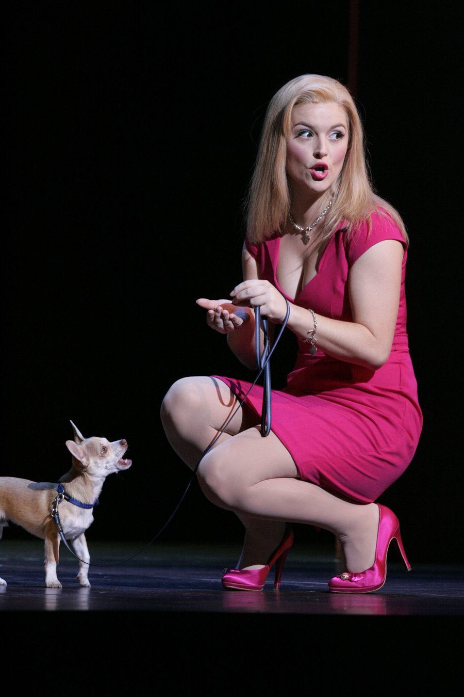

LEGALLY BLONDE
律政俏佳人 · 音乐剧版
《律政俏佳人》（Legally Blonde: The Musical）是 2007 年登陆百老汇的原创音乐喜剧，改编自 2001 年瑞茜·威瑟斯彭主演的同名电影与阿曼达·布朗（Amanda Brown）的同名小说。全剧用高饱和的粉色与泡泡糖般的流行编曲，讲了一个"金发女孩不一定是傻白甜"的爽文故事——聪明、自信与做自己，从不需要二选一。
基本信息 · FACTS
作品档案
| 中文名 | 律政俏佳人（又译《律政俏佳人》） |
|---|---|
| 英文名 | Legally Blonde: The Musical |
| 类型 | 原创音乐喜剧（Original Musical Comedy）· 2 幕 |
| 作曲 / 作词 | Laurence O'Keefe & Nell Benjamin |
| 编剧（Book） | Heather Hach |
| 导演 / 编舞 | Jerry Mitchell（托尼奖得主） |
| 原著 | 2001 年电影（Reese Witherspoon 主演）+ Amanda Brown 同名小说 |
| 百老汇首演 | 2007-04-29 · Palace Theatre（预演自 4 月 3 日） |
| 百老汇落幕 | 2008-10-19 · 30 场预演 + 595 场常规演出 |
| 西区首演 | 2010-01-13 · Savoy Theatre（预演自 2009-12-05），2012-04-07 落幕，约 974 场 |
| 主要设计 | 布景 David Rockwell / 服装 Gregg Barnes / 灯光 Kenneth Posner & Paul Miller |
| 授权上演 | 学生 / 业余版由 Music Theatre International（MTI）全球发行 |
剧情 · SYNOPSIS
加州大学洛杉矶分校（UCLA）的校园皇后、金发甜心 Elle Woods（艾丽·伍兹） 被高富帅男友 Warner 以"我需要更严肃的伴侣，要的是 Jackie 不是 Marilyn"为由甩掉。为了挽回他，艾丽放下信用卡、啃起书本，一路杀进 哈佛法学院——靠的是一张写真照片、超常的 LSAT 分数，以及一段让招生官拍案叫绝的啦啦队宣言。
到了哈佛，她被同学嘲笑、被教授刁难，却也遇见了真正欣赏她的助教 Emmett、理发店老板娘 Paulette，以及一桩牵动全场的谋杀案：健身明星客户 Brooke Wyndham 被控杀害丈夫，艾丽在实习中抽丝剥茧、当庭翻盘。最终她不仅以年级第一毕业并拿下毕业致辞，还赢回了更珍贵的自己——也顺手把前男友甩进了尘埃。
"Being true to yourself never goes out of style."
— 官方剧情内核 · 做自己，永远不会过时。
创作团队 · CREATIVE TEAM
作曲 / 作词
Laurence O'Keefe & Nell Benjamin
继《Bat Boy》后再度合作的词曲搭档，包办全剧音乐与歌词。
编剧
Heather Hach
把电影的俏皮劲儿提炼成舞台叙事。
导演 / 编舞
Jerry Mitchell
托尼奖得主，为全剧注入高能量舞蹈。
布景设计
David Rockwell
打造糖果般的哈佛与加州场景。
服装设计
Gregg Barnes
把"粉色即力量"穿在每一个角色身上。
灯光设计
Kenneth Posner & Paul Miller
霓虹与高光交织的青春舞台。
角色与卡司 · CAST
| 角色 | 简介 | 百老汇首演 | 伦敦首演 |
|---|---|---|---|
| Elle Woods | 金发律政俏佳人，全剧女主 | Laura Bell Bundy | Sheridan Smith |
| Emmett Forrest | 哈佛助教，艾丽的良师益友与真命 | Christian Borle | Alex Gaumond |
| Paulette Bonafonté | 理发店老板娘，艾丽的精神后援 | Orfeh | Jill Halfpenny |
| Warner Huntington III | 艾丽的前男友，哈佛同窗 | Richard H. Blake | Duncan James |
| Vivienne Kensington | Warner 的新女友 / 同窗对手 | Kate Shindle | Siobhan Dillon 等 |
| Professor Callahan | 法学院教授，谋杀案实习上司 | Michael Rupert | Peter Davison |
| Brooke Wyndham | 健身明星 / 谋杀案被告 | Nikki Snelson | Aoife Mulholland |
| Delta Nu 姐妹 （希腊合唱团） | Elle 脑中现身的精神后援团 | 群演合唱 | 群演合唱 |


曲目 · SONGS
ACT I
| 英文曲名 | 中文 | 情境 |
|---|---|---|
| "Omigod You Guys" | 天哪你们 | 开场，艾丽被哈佛录取，姐妹团欢呼 |
| "Serious" | 认真点 | Warner 以"我需要严肃的伴侣"提出分手 |
| "What You Want" | 你想要的 | 艾丽为打动哈佛招生拍出的啦啦队宣言 |
| "The Harvard Variations" | 哈佛变奏曲 | 同学们对"金发女孩进哈佛"的群嘲 |
| "Kill the Bitch" | 击退她 | Vivienne 与同学排挤艾丽的对抗唱段 |
| "Bend and Snap" | 弯腰一甩 | 艾丽教 Paulette 的撩汉绝技，全剧最欢脱名场面 |
| "There! Right There!" | 就·在·那 | Paulette 对 UPS 小哥 Kyle 心动 |
| "Take It Back" | 收回去 | Emmett 点醒艾丽，教她用实力说话 |
| "Whipped Into Shape" | 严以律己 | 健身明星客户 Brooke 的冲刺唱段 |
| "Break It Down" | 拆解它 | 艾丽在 Emmett 帮助下完成法律分析蜕变 |
ACT II
| 英文曲名 | 中文 | 情境 |
|---|---|---|
| "Legally Blonde" | 律政俏佳人 | 点题，艾丽确立自我 |
| "Blood in the Water" | 血在水中 | Callahan 在谋杀案中的高压施压 |
| "So Much Better" | 好太多了 | 艾丽自信高光，唱出"我是艾丽·伍兹" |
| "Blow Ya Mind" | 震撼你 | Brooke 法庭上的爆发 |
| "Find My Way / Finale" | 找到我的路 / 终曲 | 艾丽以年级第一毕业，全员欢庆 |
"I'm never going to be good enough for him, because I'm not him. I'm Elle Woods."
— So Much Better · 我不必成为他，我是艾丽·伍兹。
制作年表 · TIMELINE
- 2007.01–02旧金山试演 — Golden Gate Theatre 试演（2 月 5 日正式开幕）。
- 2007.04.29百老汇首演 — Palace Theatre 开幕（预演自 4 月 3 日），Laura Bell Bundy 饰 Elle。
- 2007.09.18电视转播 — 现场录制并于 10 月经 MTV 播出；衍生真人秀《The Search for Elle Woods》。
- 2008.10.19百老汇落幕 — 共 30 场预演 + 595 场常规演出。
- 2008.09美国首轮巡演 — 启动，后扩展至二轮巡演。
- 2010.01.13西区首演 — Savoy Theatre 正式开幕（预演自 2009-12-05），Sheridan Smith 饰 Elle。
- 2011.03.13奥利弗奖 3 项 — 最佳新音乐剧、最佳女主（Smith）、最佳女配（Halfpenny）。
- 2011.07英国巡演 — 自 Liverpool Empire 启动。
- 2012.04.07西区落幕 — 伦敦驻演约 974 场，远超百老汇。
- 2022Regent's Park 复排 — 露天剧院复排（Lucy Moss 导演，Courtney Bowman 饰 Elle），获《泰晤士报》五星好评。
奖项与荣誉 · AWARDS
2008 · 托尼奖
7 项提名（未获奖）
- 最佳原创配乐
- 最佳音乐剧女主角（Laura Bell Bundy）
- 最佳音乐剧男配角（Christian Borle）
- 最佳音乐剧女配角（Orfeh）
- 最佳编舞（Jerry Mitchell）
2011 · 奥利弗奖
3 项获奖（提名 5 项）
- 最佳新音乐剧
- 最佳音乐剧女主角（Sheridan Smith）
- 最佳音乐剧女配角（Jill Halfpenny）
2011 · WhatsOnStage
4 项获奖
- 最佳新音乐剧 等
2007 · 票房
百万美元俱乐部
- 2007-06 周票房破 $1,003,282
文化影响 · IMPACT
- "Bend and Snap" 走出剧场成为流行文化梗，被广泛模仿与二次创作。
- 粉色 = 女性力量：把"金发 = 肤浅"的刻板印象翻转为"聪明且自信"，粉色成了自信的符号。
- 拓路者：作为女性主导的流行风音乐喜剧，影响了此后一批同类作品（如《Mean Girls》音乐剧）。
- 卡司录音进入英国榜单；2022 复排获《泰晤士报》五星好评，印证其持久人气。
- 全球上演：除百老汇与西区长驻外，美、英、澳、韩等多国巡演与制作不断，MTI 学生版让校园舞台也能"变粉"。